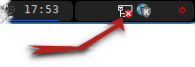

Внимание! Свернуть и развернуть это окошко можно клавишей F1, либо мышкой в левом углу панели. Закрыть - ALT+F4.
Справочная система режима "Терминал"
1. Сеть
Прежде чем подключиться к удаленному компьютеру Вам нужно установить сетевое соединение.

Значок апплета настроек сети находится в верхнем правом углу монитора
2. Управление
Закрыть любое окно можно стандартным сочетанием клавиш ALT+F4.
Внимание!!! Закрытие окна remmina равносильно завершению сеанса.

- Помощь, при нажатии правой кнопки мыши появляется или исчезает эта страница
- Регулятор громкости. При нажатии отключается звук. Изменение громкости осуществляется колесиком мыши.
- Индикатор раскладки клавиатуры. При нажатии - переключает.
- Индикатор заряда батареи.
- Часы. При нажатии покажет дату.
- Системный лоток для отображения апплетов программ.
- Кнопка выхода из системы.
3. Реммина
Remmina — клиент удалённого рабочего стола, созданный проектом FreeRDP с использованием GTK. Поддерживаются следующие протоколы: SSH, VNC, RDP, NX и XDMCP.
4. Дополнительная помощь
После того как вы настроите сеть, вам будет доступна справочная система online